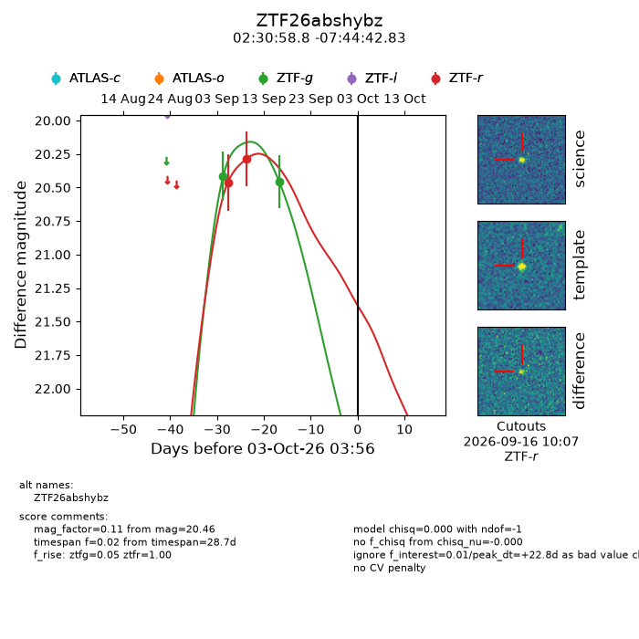
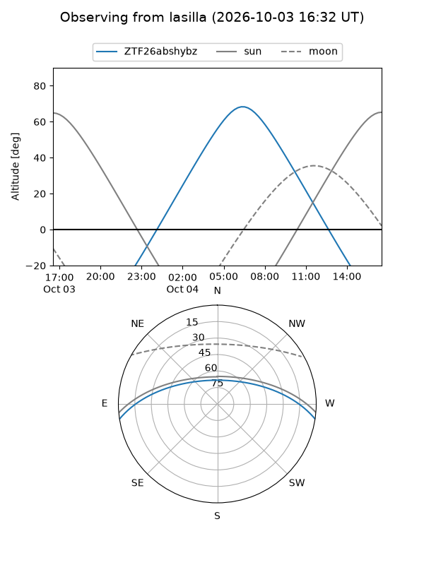
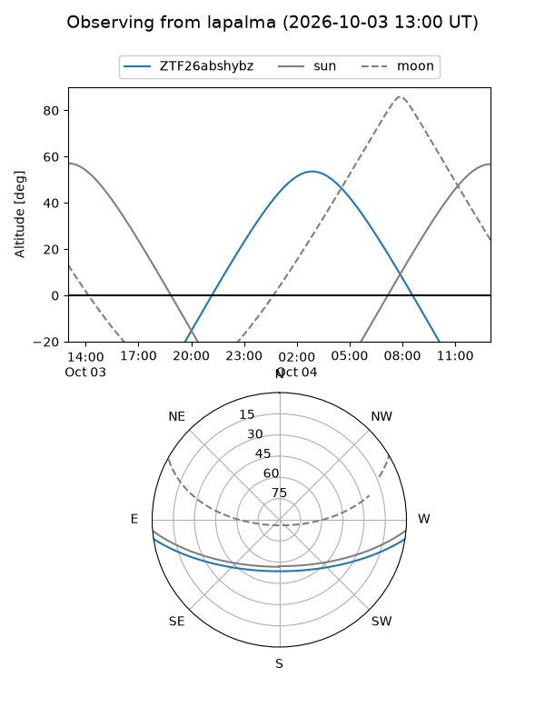
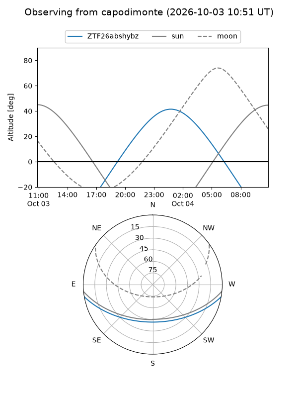
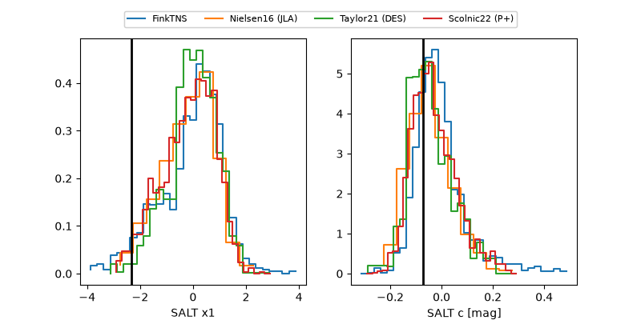

ZTF26abshybz
Target ZTF26abshybz at 2026-10-03 13:28
Aliases and brokers:
FINK-ZTF: ztf.fink-portal.org/ZTF26abshybz
Lasair-ZTF: lasair-ztf.lsst.ac.uk/objects/ZTF26abshybz
ALeRCE-ZTF: alerce.online/object/ZTF26abshybz
Direct TNS query: direct search
alt names
ZTF26abshybz (ztf,fink_ztf)
Coordinates:
equatorial (ra, dec) = 37.7449,-7.74523
equatorial (HMS+DMS) = 02:30:58.77,-07:44:42.83
galactic (l, b) = (178.1197,-59.47874)
Flags:
peak dt: +23.2
Photometry:
last ztfg=20.46, ztfr=20.29
2 ztfg, 2 ztfr detections
Lightcurve

Visibility



Additional plots
